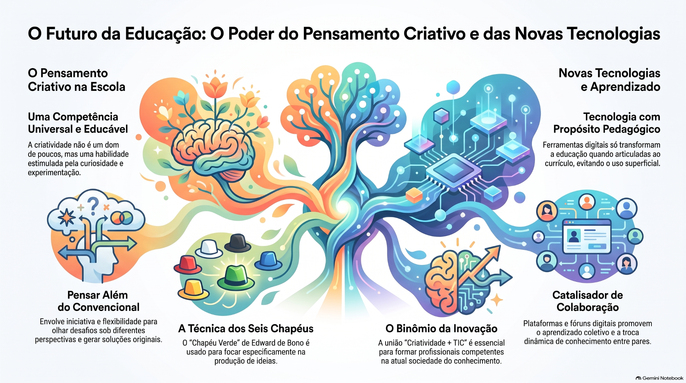

Uma competência treinável
A criatividade é tratada como capacidade humana que pode ser desenvolvida, e não como um dom restrito a poucas pessoas.
Criatividade, tecnologia e educação na construção de novas práticas de aprendizagem.
Apresentação do artigo “Além das Telas: Por que a Tecnologia sem Criatividade é Apenas ‘Velocidade sem Direção’”.

A criatividade é apresentada como uma competência educável: pode ser estimulada por curiosidade, experimentação, diferentes perspectivas e autoria.
A criatividade é tratada como capacidade humana que pode ser desenvolvida, e não como um dom restrito a poucas pessoas.
A técnica dos Seis Chapéus organiza diferentes perspectivas de pensamento; o chapéu verde é associado à geração de ideias.
O pensamento criativo envolve ideias incomuns, originalidade, iniciativa, autoconfiança e múltiplos pontos de vista.
Em Csikszentmihalyi (1999), a criatividade é compreendida por meio da relação entre indivíduo, campo e domínio. A criação não ocorre isoladamente: ela se relaciona com pessoas, conhecimentos, práticas e contextos.
A tecnologia ganha sentido educativo quando está articulada ao currículo, à metodologia e aos objetivos de aprendizagem.
O uso de tecnologia sem orientação educacional pode acelerar processos sem necessariamente produzir aprendizagem significativa.
O impacto das tecnologias depende de sua articulação com o currículo e com as práticas pedagógicas.
Crook (1994) e Dillenbourg (1999) são mobilizados na discussão sobre aprendizagem colaborativa mediada por tecnologias.
As TICs podem ampliar participação, pesquisa, autoria e circulação de conhecimentos.
Ambientes digitais podem favorecer múltiplos caminhos, linguagens e possibilidades de resposta.
Os estudos apresentados aproximam criatividade, interação, protagonismo, tecnologias e ambientes seguros de aprendizagem.
| Estudo | Foco | Contribuição destacada |
|---|---|---|
| Vásquez (2021) | Educação básica | Estratégias para estimular originalidade diante de desafios cotidianos. |
| Moura de Carvalho et al. (2021) | Integração escolar | Importância de um clima seguro para assumir riscos e aprender com o erro. |
| Ochoa-Mendoza et al. (2016) | Linguagem e comunicação | Métodos dialógicos e interativos associados ao protagonismo estudantil. |
| Ramírez & Rincón (2019) | Universidade | Construção social do conhecimento envolvendo lógica, emoção e interação. |
| Robles Pihuave & Zambrano (2020) | Ambientes criativos e TIC | As TICs podem facilitar interação docente-discente e aprendizagem significativa. |
| Fernández Castrillo & Rogel (2021) | Criatividade na era digital | Pensamento visual e lateral conectado aos hábitos digitais e ao currículo. |
| Sánchez Cerón (2015) | Sociedade do conhecimento | Criatividade e TIC aparecem como dimensões relacionadas na cibersociedade contemporânea. |
Os materiais abaixo complementam a apresentação e utilizam os arquivos originais enviados para a atividade.
Material visual principal da apresentação.
Arquivo de áudio associado ao trabalho.
Vídeo em H.264/AAC, formato adequado para reprodução em navegadores modernos.
O debate desloca-se de “ter tecnologia” para “produzir experiências educativas com sentido”.
A escola pode funcionar como espaço de discussão, experimentação e criação de estratégias para problemas reais.
Um ambiente que permite testar, errar, refletir e reformular favorece processos criativos e aprendizagem.
Ferramentas digitais devem estar articuladas a objetivos pedagógicos, currículo, participação e autoria.
Preparar estudantes para o futuro não significa apenas ensinar a operar tecnologias. Significa criar condições para interpretar problemas, formular perguntas, criar alternativas, colaborar e utilizar tecnologias como meios de expressão e transformação.
O desafio educacional está em transformar ferramentas tecnológicas em experiências de aprendizagem que ampliem autoria, pensamento crítico, colaboração e criatividade.